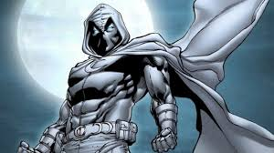

Moon Knight: Gecenin Koruyucusu
Kimi insanlar güneşin aydınlattığı yolları seçer, kimileri ise karanlıkta yürümeye alışmıştır. Marc Spector, nam-ı diğer Moon Knight, karanlıkla savaşan ve onun içinde kaybolmuş bir adam. Onun hikayesi, sıradan bir kahraman masalı değil—ölüm, ihanet ve tanrısal bir kaderin iç içe geçtiği bir trajedi.
Marc Spector: Eski Bir Asker, Yeni Bir Tanrının Şampiyonu
Marc Spector, Chicago’da dünyaya geldi. Babası, bir haham (yahudi din adamı) olarak huzurlu bir yaşam sürmesini istese de,
Marc için savaş her zaman bir cazibe kaynağı oldu. Orduda kendini kanıtladı, paralı asker olarak dünyayı gezdi,
en tehlikeli görevleri üstlendi. Ancak bu yol, onu bir gün çölde ölüme terk edilmesine kadar götürdü.
Bir görev sırasında, eski patronu Raul Bushman, onu vahşice dövdü ve çölde ölüme terk etti. Ancak Marc’ın hikâyesi burada bitmedi.
Hayatı sona ermek üzereyken, kendini eski bir Mısır tapınağında buldu. Burada, Mısır ay tanrısı Khonshu’nun heykelinin önünde
bir seçimle karşı karşıya kaldı: Ölüm mü, yoksa bir tanrının şampiyonu olmak mı? Khonshu, Marc’ı bir kez daha hayata döndürdü ve ona
yeni bir kader sundu: Moon Knight olarak kötülüğe karşı savaşmak.
Özel Güçleri
- Ayın Gücü: Moon Knight’ın fiziksel gücü, ayın evrelerine bağlı olarak artar. Dolunayda en güçlü hâline ulaşır.
- Ölümden Dönme: Moon Knight defalarca ölümle burun buruna gelmiş, hatta birkaç kez gerçekten ölmüştür. Ancak Khonshu’nun koruması altında, tekrar tekrar geri dönmüştür.
- Üst Düzey Dövüş Yeteneği: Ordu, CIA ve paralı askerlik geçmişi sayesinde, dövüş sanatlarında ustadır. Silahsız dövüşte rakipsizdir ve birçok ölümcül tekniği bilir.
- Teknolojik ve Mistik Silahlar: Ay şekilli bıçaklar, yüksek teknoloji ürünü silahlar ve Khonshu’nun ona verdiği özel ekipmanlarla savaşır.
- Çoklu Kişilik Bozukluğu: Marc, kendi içinde Steven Grant , Jake Lockley ve Moon Knight olmak üzere birçok farklı kişiliğe sahiptir. Bu bazen bir avantaj sağlarken, bazen de onun en büyük zaafı olur.
Moon Knight'ın Kişilikleri
- Steven Grant: Zengin bir iş adamı kimliğiyle, topluma entegre olur. Ancak bu kimlik, sadece bir illüzyondur.
- Jake Lockley: New York sokaklarında taksi şoförü olarak çalışarak suç dünyasını yakından takip eder.
- Moon Knight: Geceleri, ayın ışığı altında savaşır. O, gecenin ve adaletin sessiz gölgesidir.
Sende Moon Knight'a Destek Olmak İster Misin ?
